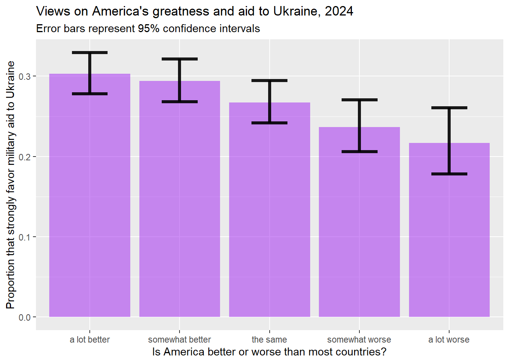

Chapter 6 Making inferences from sample means
6.1 Getting started with this chapter
To get started in today’s chapter, open the project that you made in lab 1. If you forgot how to do this, see the instructions in section 2.2.
Now, open a new script file and save it in your scripts folder as “chapter 6 practice.” Copy and paste this onto the page (updating the text so that it is about you):
####################################
# Your name
# 20093 Chapter 6, Practice exercises
# Date started : Date last modified
####################################
#libraries------------------------------------------
library(tidyverse)
library(Hmisc) #the cut2 command helps us simplify interval variables
library(scales) #this is useful when the labels on our axes overlap
library(flextable)#this makes tables that we can easily export into a word processor
Now select all the text on this page, run it, and save it.
6.2 Constructing a confidence interval around a mean
The fundamental task of much statistical analysis is to make mathematically informed inferences about populations from samples. We can see this most clearly when looking at data like the ANES, which is a sample of Americans from which we want to make inferences about all Americans. But even when looking at our states or world dataset, in which our dataframe includes data about all states in the US and (almost) all countries in the world, it is still helpful to think about making inferences about populations. In this case, we might think of the population as states or countries that we cannot observe because they are hypothetical, they have not yet come into existence (because they exist in the future) or they existed in the past. In other words, we are studying our group of states or countries to make inferences about hypothetical states or countries, states or countries in the future, states or countries in the past, or state or countries that we cannot observe for some other reason.
One inference that we often want to make about a population is the mean of some variable. Given the mean that we observe in sample, what is the range of outcomes for the population mean that we might reasonably expect to observe?
This is the formula for the confidence interval around a mean:
\[CI = \bar{x} ± t_{critical}{\frac{s}{\sqrt{n}}}\]
The critical value for t will vary with the sample size. “S” is the sample standard deviation, and “n” is the sample size. You might recall from class that \[{\frac{s}{\sqrt{n}}}\] is the standard error of the sample mean.
Let’s imagine that we want to estimate the mean amount that Americans owe in student loans. First we can ask R to calculate the mean of our sample, using the mean() command that we learned in Chapter 3. If we were to enter mean(anes2024$studentLoans), we would get NA” as our output, because there are some cases with missing data. To address this, we must ask R to remove the NAs for the purposes of this operation with “na.rm=TRUE”, like this:
## [1] 11262.54This tells us that the mean of our sample is 11262.54. Or, in other words, the average person in owes $11,262.54 in student loans. Based on this, what can we say about the population mean? To answer this question, we can ask R to construct a confidence interval around this mean, with this command:
##
## One Sample t-test
##
## data: studentLoans
## t = 15.477, df = 3945, p-value < 2.2e-16
## alternative hypothesis: true mean is not equal to 0
## 95 percent confidence interval:
## 9835.878 12689.193
## sample estimates:
## mean of x
## 11262.54Before we look at the output, let’s look at the command. We are asking R to construct a t-test of the mean of only one variable (which explains the ~1), and we are telling R to find that variable in the anes2024 dataframe.
Looking at the output, after the title, “One Sample t-test” the next three lines are not particularly useful. The fourth and fifth lines, however, are quite helpful. They tell us that the 95% confidence interval that we can put around our sample mean goes from 9835.878 to 12689.193. In other words, there is a 95% chance that the true population mean student loan debt is between $9,835.88 and $12,689.19. If we wanted to be even more confident than 95%–say, for example, we wanted to be 99% confident that our interval contains the population mean—-we could include a line in our command setting the confidence interval like this:
##
## One Sample t-test
##
## data: studentLoans
## t = 15.477, df = 3945, p-value < 2.2e-16
## alternative hypothesis: true mean is not equal to 0
## 99 percent confidence interval:
## 9387.257 13137.814
## sample estimates:
## mean of x
## 11262.54When you run this command, notice that if we want to be more confident that our interval contains the true population mean, the margin between our lower and upper estimate gets larger. Similarly, if we set the confidence interval to 90% (using conf.level=.9), or 80% (using conf.level=.8), the interval gets smaller.
6.3 Constructing a confidence interval around a proportion
For nominal and ordinal variables, it does not make sense to calculate a mean, but we still often want to make inferences about a population from a sample. In fact, these are one of the most commonly reported kinds of inferences that we who follow politics hear: 54.2% of people support this policy, 32.1% of people support that politician, etc. To ask R to calculate a confidence interval around a proportion, we first to answer two questions: how many cases got the value that we are interested in, and how many cases are there total? So, for example, let’s say that we want to use our anes2024 dataset to estimate the proportion of Americans that are married. We can first run the table command, like this:
##
## divorced married never married separated widowed
## 771 2745 1242 91 414When we run this command, we see that there are 2,745 married people in our sample. Unfortunately, the table command itself does not tell us the total number of cases in our sample, but to get that, we can ask R to sum all the values that it shows in the table command like this:
## [1] 5263When we run this command, we get the total number of cases for which R has data on the marital question: 5,263. This is the sum of all of the numbers that we saw above, when we ran the table() command. Since the table() command automatically excludes the NAs, this sum also excludes NAs.
So, now we know that there were 2,745 married people in our dataset out of the 5,263 people for whom we have data. We could do have R do some simple math and calculate a proportion by entering 2745/5263 into the Console. The output tells us that 0.5215656—about 52.2%—of individuals in our sample are married. Based on this finding about our sample, what can we say about our population? To help us generalize, we can use those two numbers (2,745 married people out of 5,263 total people) along with the prop.test() command to help generate a confidence interval around that proportion.
When using the prop.test() command, in the parenthesis we first put the number of cases with the value that we are interested in, then a comma, then the total number of cases. So, to estimate the proportion of Americans that are married, we would use prop.test() like this:
##
## 1-sample proportions test with continuity correction
##
## data: 2745 out of 5263, null probability 0.5
## X-squared = 9.7047, df = 1, p-value = 0.001838
## alternative hypothesis: true p is not equal to 0.5
## 95 percent confidence interval:
## 0.5079640 0.5351356
## sample estimates:
## p
## 0.5215656Just like the output from the t-test, the first few lines are testing a hypothesis that we are likely not interested in. In this case, the default is to test the hypothesis that the population proportion is actually .5. If you want to set that hypothesis to a different value, you can add p=the value you are interested in after a comma. So, for example, if you had a hypothesis that 70% of Americans are married, you could test that hypothesis with this command:
prop.test(2745,5263, p=.7)But the most important part of this output begins with the fourth line. This shows that the 95% confidence interval around the estimate that the proportion of Americans that are married goes from 0.5079640 to 0.5351356. Or, put another way, based on our sample, we can infer that 95% of the time, a sample like ours would be drawn from a population where between 50.8% and 53.5% of the population was married.
If we want to change the values of our confidence interval, to be 99% confident (or 90% confident, or 80% confident), we can add a comma and then conf.level= and then the level that we are interested in, expressed as a proportion. So, for example, if we wanted to be 99% confident that our interval contains the true population proportion, we could alter the command like this:
prop.test(2745,5263, conf.level=.99)Note that the interval gets wider as the confidence level goes up.
6.4 Constructing confidence intervals around several proportions at once
In the previous section, we learned how to construct a confidence interval around a single proportion at a time. However, what if we want to calculate confidence intervals around all values of a nominal or ordinal variable at the same time? To do that, you can use the following code. Just replace anes2024 with the dataframe that you are interested in analyzing, and replace the two instances of marital (in the second and third lines of the code) with the name of the variable that you are interested in. You can keep everything else the same:
anes2024 %>%
filter(!is.na(marital)) %>%
group_by(marital) %>%
summarise(group.n=n()) %>%
mutate(total.n=sum(group.n)) %>%
mutate(proportion=group.n/total.n) %>%
rowwise() %>%
mutate(lower_ci = prop.test(group.n, total.n, conf.level=0.95)$conf.int[1]) %>%
mutate(upper_ci = prop.test(group.n, total.n, conf.level=0.95)$conf.int[2]) ## # A tibble: 5 × 6
## # Rowwise:
## marital group.n total.n proportion lower_ci upper_ci
## <chr> <int> <int> <dbl> <dbl> <dbl>
## 1 divorced 771 5263 0.146 0.137 0.156
## 2 married 2745 5263 0.522 0.508 0.535
## 3 never married 1242 5263 0.236 0.225 0.248
## 4 separated 91 5263 0.0173 0.0140 0.0213
## 5 widowed 414 5263 0.0787 0.0716 0.0863Reading down this output, we can see that a proportion of .146 (or 14.6%) of our sample is divorced. The next two columns tell us that there is a 95% chance that the true population proportion of divorced people is between 13.7% and 15.6%. We can see the married values on the second line, with a familiar confidence interval, and each additional line clearly displays the confidence interval around the proportion that we are interested in. And as we continue to read down, we can see the remaining proportions with their associated confidence intervals.
To save this table of confidence intervals in a format that we can easily pull into a word processor, we can use the flextable technique that we learned in Section 4.7.4, which will create a file in our project folder called “ci_table.docx”:
ci_table<-anes2024 %>%
filter(!is.na(marital)) %>%
group_by(marital) %>%
summarise(group.n=n()) %>%
mutate(total.n=sum(group.n)) %>%
mutate(proportion=group.n/total.n) %>%
rowwise() %>%
mutate(lower_ci = prop.test(group.n, total.n, conf.level=0.95)$conf.int[1]) %>%
mutate(upper_ci = prop.test(group.n, total.n, conf.level=0.95)$conf.int[2])
flextable(ci_table) %>% save_as_docx(path="ci_table.docx")6.5 T-test of independent means
We often find ourselves in a situation where we want to compare the means of two different groups in our sample, and make inferences about the population. So, for example, we might want to compare men and women, Democrats and Republicans, voters and non-voters, etc. For the purposes of this example, we will be comparing democracies and non-democracies in our world dataframe. Before we can start with this comparison, though, we have to do a bit of housekeeping. The democracy variable that we have in the world dataframe is an interval variable based on the Polity Score, with values ranging from -10, which is a complete autocracy, to 10, a complete democracy. This score is often simplified, so that -10 to -6 is an autocracy, -5 to 5 is an “anocracy” (a mixed authority regime, neither complete autocracy nor complete democracy), and 6 to 10 means democracy. To simplify the variable in this way, we can use the case_when command from section 4.6.2:
world2025<-world2025 %>%
mutate(polity2=case_when(polity %in% -10:-6 ~ "autocracy",
polity %in% -5:5 ~ "anocracy",
polity %in% 6:10 ~ "democracy"))
world2025$polity2<-ordered(world2025$polity2,
levels=c("autocracy","anocracy","democracy"))The world2025 dataframe also has a variable that measures educational inequality, called edInequality, which can range (at least in theory) from 0 (perfect equality) to 100 (perfect inequality). In our data, however, we can use this script (from section 3.4) to see the countries in the world with the fewest educational inequalities
world2025 %>%
dplyr::select(country,edInequality) %>%
arrange(edInequality)Can you run that same script with arrange(desc) to find the countries in the world with the most educational inequality?
Now, using the commands that we learned in chapter 4, we can first examine what the mean differences are between democracies, anocracies, and autocracies on their level of educational inequality, with this command:
world2025 %>%
filter(!is.na(polity2)) %>%
filter(!is.na(edInequality)) %>%
group_by(polity2) %>%
summarise(mean=mean(edInequality), sd=sd(edInequality), n=n())## # A tibble: 3 × 4
## polity2 mean sd n
## <ord> <dbl> <dbl> <int>
## 1 autocracy 25.9 11.5 11
## 2 anocracy 40.2 19.4 34
## 3 democracy 24.7 14.7 79This output suggests that anocracies have the most educational inequality, followed by autocracies, and then democracies have the least educational inequality (although democracies and autocracies are close). Are these differences due to random sampling error, or do they reflect a population-level difference between democracies, anocracies, and autocracies? In other words, are these differences statistically significant?
Before conducting a significance test, it is important to specify our null and research hypotheses. In this case, our null hypothesis is that there is no relationship between regime type and level of educational inequality, and our research hypothesis is that democracies have less educational inequality than autocracies. To test our hypotheses, we can use the same t.test() command from above, but we have to give it more information first. Here is the command that we can use:
t.test(edInequality ~ polity2, data=world2025 %>%
filter(polity2=="democracy"|polity2=="autocracy"))##
## Welch Two Sample t-test
##
## data: edInequality by polity2
## t = 0.31549, df = 14.931, p-value = 0.7568
## alternative hypothesis: true difference in means between group autocracy and group democracy is not equal to 0
## 95 percent confidence interval:
## -6.995828 9.425515
## sample estimates:
## mean in group autocracy mean in group democracy
## 25.89282 24.67797Notice how the first thing in the parentheses after t.test is the dependent variable (i.e. the variable that we are calculating the mean of), followed by a ~ and then our independent variable (polity2). One thing that is a little tricky is that R does not like to do a t-test when the independent variable has more than two values. To address this, I have used the dplyr filter command to tell R to only look at cases of polity2 coded “democracy” or “autocracy” (i.e. I am filtering out the NAs and partial democracies). The “|” between the two conditions (it is the character above the “" on your keyboard) means”or.”
Now take a look at the output. There are a few things to note here. First of all, we could see that the reported p-value is 0.7568. That tells us that, if we accept the research hypothesis that democracies have more equality than non-democracies, there is a probability of .7568, or a 75.68% chance, that we are making Type I error (rejecting a true null hypothesis). Since the critical value for p is generally set to .05 (meaning we are not willing to take more than a 5% risk of Type I error), we would fail to reject the null hypothesis.
We can also see that we would fail to reject the null hypothesis by looking at the confidence interval that R reports. Since this is a t-test of two samples, the confidence interval is actually of the difference between the two means. In other words, that confidence interval is telling us that there is a 95% chance that the true population difference in educational inequality between democracies and autocracies is between -6.995 and 9.4255. Since that interval includes 0, we cannot rule out the possibility that there is no difference at all between our two means in the population.
We can also graph these results. As usual, we will put our independent variable (regime type) on the X-axis, and our dependent variable, educational inequality, on the Y axis. For today’s new feature, we will also add 95% confidence intervals to our graph. This gives us the ability to see whether the differences between all of the bars on our graph are statistically significant. And, while an independent samples t-test can only be between the means of two groups at a time, this graph will let you look at more than two groups at a time. Below is the code:
plotting.data<-world2025 %>%
filter(!is.na(polity2)) %>%
filter(!is.na(edInequality)) %>%
group_by(polity2) %>%
summarise(
n=n(),
mean=mean(edInequality),
sd=sd(edInequality)) %>%
mutate(se=sd/sqrt(n)) %>%
mutate(ci=se * qt((1-0.05)/2 + .5, n-1))
ggplot(plotting.data) +
geom_bar(aes(x=polity2, y=mean), stat="identity", fill="purple", alpha=0.5) +
geom_errorbar( aes(x=polity2, ymin=mean-ci, ymax=mean+ci), width=0.4, colour="black", alpha=0.9, linewidth=1.5) +
ggtitle("Educational inequality by regime type",
subtitle="Error bars represent 95% confidence intervals")+
xlab(NULL)+
ylab("Educational inequality, 2010 (higher\nnumbers mean more inequality)")Here we can see that, although the differences between some of bars are quite large, some of the error barsoverlap, which means that we can’t rule out the possibility that differences between means are due to random sampling error. Whenever the error bars between two totals overlap, the differences are not statistically significant. So for example, the difference between anocracy and democracy is statistically significant, but the difference between anocracy and autocracy and the difference between autocracy and democracy are not statistically significant.
6.6 Caution about “statistical significance”
The idea of “statistical significance” is often misinterpreted. Saying that a relationship between variables has statistical significance only means that we would be unlikely to observe a relationship between variables such as the one we are observing in a sample drawn from a population where there is no relationship between those variables. In other words “statistically significant” means “likely not due to random sampling error.”
Saying that a relationship is between two variables is “statistically significant” does not mean:
- That the relationship between those variables is strong.
- That the relationship between those variables is substantively significant (that it matters in the real world)
- That the relationship is causal (that change in one of the variables definitely causes change in the other)
Conversely, with the statistical tests that we introduce in this workbook, if you observe a relationship that is not statistically significant, you cannot conclude (based on that alone) that there is no relationship between your two variables. Let’s take another look at the mean comparison table of the relationship between regime type and educational inequality:
## # A tibble: 3 × 4
## polity2 mean sd n
## <ord> <dbl> <dbl> <int>
## 1 autocracy 25.9 11.5 11
## 2 anocracy 40.2 19.4 34
## 3 democracy 24.7 14.7 79If you look at the leftmost column, titled “n,” you will notice that there are only 11 autocracies and 34 anocracies in our world2025 dataframe. Those relatively small number of cases could be the reason that the difference in educational inequality between autocracies and anocracies are not statistically significant. Based on what we observe in this data, we simply don’t have enough information to determine whether or not there a meaningful difference between the educational inequality of anocracies and autocracies.
6.7 T-test of independent proportions
There are times when we want to compare two or more proportions to examine whether or not the differences are due to random sampling error or some genuine correlation at the population level. Unfortunately, R does not make it easy to run a t-test comparing two proportions. However, we can use dplyr in a way similar to what we did in section 6.3 to generate some helpful output. Before we begin, we have to know three things:
- What is the nominal or ordinal independent variable that we are interested in examining?
- What is the nominal or ordinal dependent variable that we are interested in examining?
- For our dependent variable, what is the value that we want to focus on?
For the following example, I am interested in the relationship between the belief that America is better than most countries in the world (natPride) and support for military aid to Ukraine (armUkraine). My hypothesis is that those that believe that America is a great country will also believe that America should want to spread that greatness by supporting other democracies that are fighting against foreign invasions.
To generate a table that displays that information, I will use the following code. Please note that this is very similar to the code that we used in section 6.4. When using this code to generate your own table, you can replace anes2024 with the dataframe that you want to look at, “armUkraine” with your dependent variable, “natPride” with your independent variable, and armUkraine=="favor strongly" with DV=="the value that you are interested in".
Here is the code:
anes2024 %>%
filter(!is.na(natPride)) %>%
filter(!is.na(armUkraine)) %>%
group_by(natPride) %>%
summarise(
n=n(),
numerat=sum(armUkraine=="favor strongly")) %>%
mutate(proportion=numerat/n) %>%
rowwise() %>%
mutate(lower_ci = prop.test(numerat, n, conf.level=0.95)$conf.int[1]) %>%
rowwise() %>%
mutate(upper_ci = prop.test(numerat, n, conf.level=0.95)$conf.int[2])## # A tibble: 5 × 6
## # Rowwise:
## natPride n numerat proportion lower_ci upper_ci
## <ord> <int> <int> <dbl> <dbl> <dbl>
## 1 a lot better 1277 387 0.303 0.278 0.329
## 2 somewhat better 1160 341 0.294 0.268 0.321
## 3 the same 1119 299 0.267 0.242 0.294
## 4 somewhat worse 701 166 0.237 0.206 0.270
## 5 a lot worse 406 88 0.217 0.178 0.261This output has a bunch of great information. The first row, “a lot better”, for example, tells us that a total of 1277 people in the ANES study in 2024 thought that the the US is “a lot better” than most countries. And of those 1277, the second number tells us that 387 of them strongly favor military aide to Ukraine. The third number tells us that 30.3% of people that think America is a lot better than other countries strongly support military aid to Ukraine. The lower_ci and upper_ci columns tell us that there is a 95% chance that the true population proportion of those that think that American is much better than other countries strongly favor military aid to Ukraine is between .278 (27.8%) and .329 (32.9%).
As we read down the rows, we see that some of the confidence intervals overlap with one another. When these confidence intervals overlap, we can say that the differences are not statistically significant (or that we cannot rule out the chance that the differences that we observed are due to random sampling error). So, for example, the confidence interval between the “a lot better” and “somewhat better” proportions that strongly favor military aid to Ukraine. This is easier to see on a graph. We can generate a graph with code similar to what we used in section 6.5:
plotting.data<-anes2024 %>%
filter(!is.na(natPride)) %>%
filter(!is.na(armUkraine)) %>%
group_by(natPride) %>%
summarise(
n=n(),
numerat=sum(armUkraine=="favor strongly")) %>%
mutate(proportion=numerat/n) %>%
rowwise() %>%
mutate(lower_ci = prop.test(numerat, n, conf.level=0.95)$conf.int[1]) %>%
rowwise() %>%
mutate(upper_ci = prop.test(numerat, n, conf.level=0.95)$conf.int[2])
ggplot(plotting.data) +
geom_bar(aes(x=natPride, y=proportion), stat="identity", fill="purple", alpha=0.5) +
geom_errorbar(aes(x=natPride, ymin=lower_ci, ymax=upper_ci), width=0.4, colour="black", alpha=0.9, linewidth=1.5) +
ggtitle("Views on America's greatness and aid to Ukraine, 2024",
subtitle="Error bars represent 95% confidence intervals")+
xlab("Is America better or worse than most countries?")+
ylab("Proportion that strongly favor military aid to Ukraine")
This graph shows us that, while some of those differences are not statistically significant, there is clearly a statistically significant differences between views on arming Ukraine from those that think America is a lot better than most other countries compared with those who think that America is a lot worse.
You might also notice that the confidence interval on the “a lot worse bar” is bigger than the confidence interval on the “a lot better” bar. That is because, if you look at the table that we generated at the beginning of this section, there are 1,277 people in our sample that think that America is a lot better than other countries, but only 406 people that think that America is a lot worse. Because we are basing our estimated proportion on a smaller sample when generating the confidence interval around the “a lot worse” bar, the confidence interval is larger (in other words, smaller samples make us less confident of our estimates, and larger samples make us more confident of our estimates).
6.8 Review of this chapter’s commands
| Command | Purpose | Library |
|---|---|---|
| t.test() | To calculate a t-test. With a one sample test, you put the variable that we are interested in ~1, and then a comma, and then data=“your dataframe.” For an an independent samples t-test, you put DV~IV in the parenthesis, and then a comma, and then data= “your dataframe”. | Base R |
| t.test(…, mu=?) | A t-test of a single sample is testing the hypothesis that the population mean of the variable you are testing is 0. If you want to test another hypothesis (for example, that the average TCU student has a 17 purple shirts), you can set mu to be the number that you are hypothesizing. | Base R |
| t.test(…, conf.level=?) | The default confidence interval for a t-test is .95. If you want to set it to something else, you can do it with the conf.level command. | Base R |
| sum(table()) | This command adds up all of the values in a frequency table. It is useful when calculating proportions. | Base R |
| prop.test() | This command calculates a confidence interval around a proportion. You must give R two numbers. The number of your cases with the value that you are interested in, followed by a comma, and then the total number of cases that you have data on for that variable (which you can calculate with sum(table()). For example, if you had a sample with 500 people and 200 said that bagels were their favorite baked good, you would write prop,test(200,500) to get a confidence interval around the proportion of people that like bagels best. | Base R |
| prop.test(…, p=?) | The default hypothesis for an estimate of a population proportion is that the proportion is .5 (or 50%). If you want to change that, you can type p=and then the proportion that you are hypothesizing about. | Base R |
| prop.test(…, conf.level=?) | The default confidence interval for a test of proportions is .95. If you want to set it to something else, you can do it with the conf.level command. | Base R |